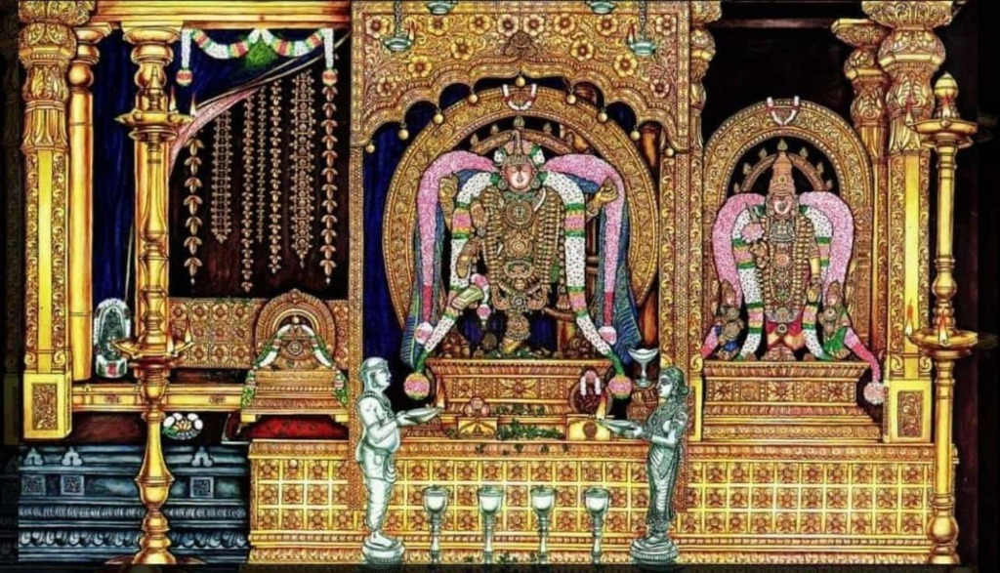
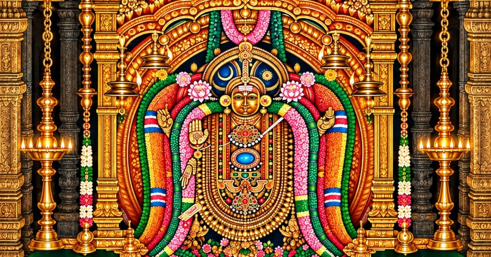
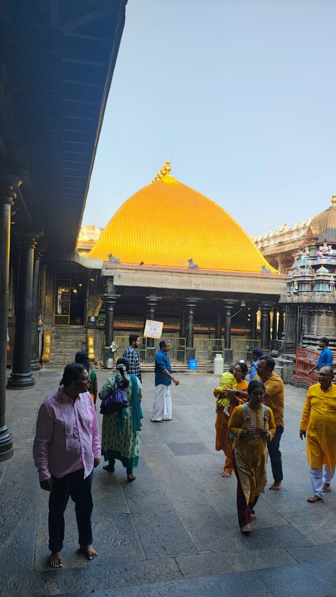
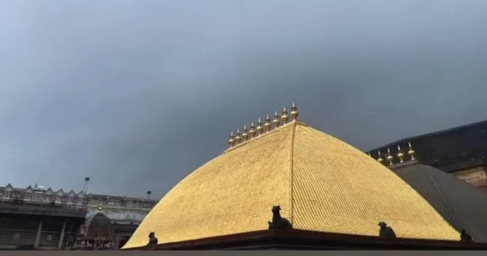
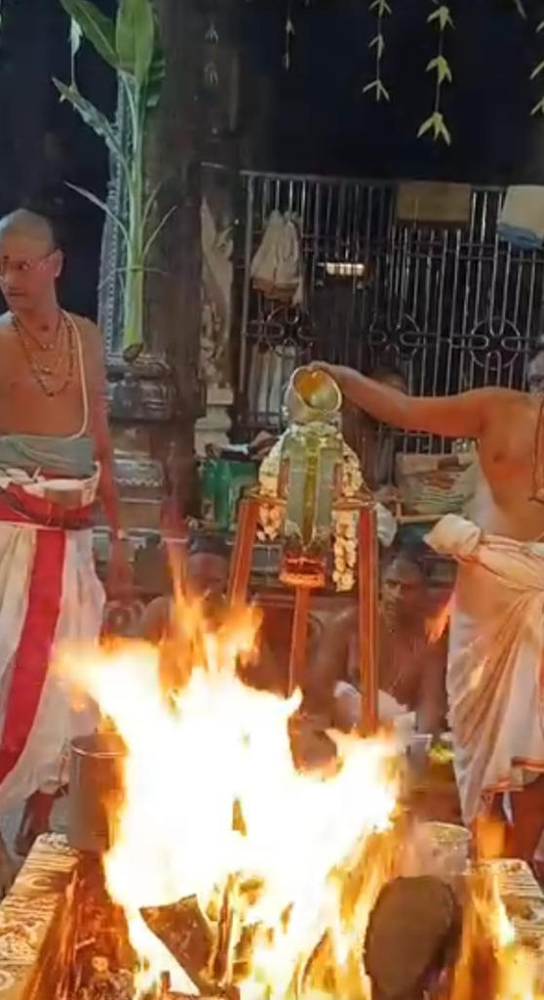
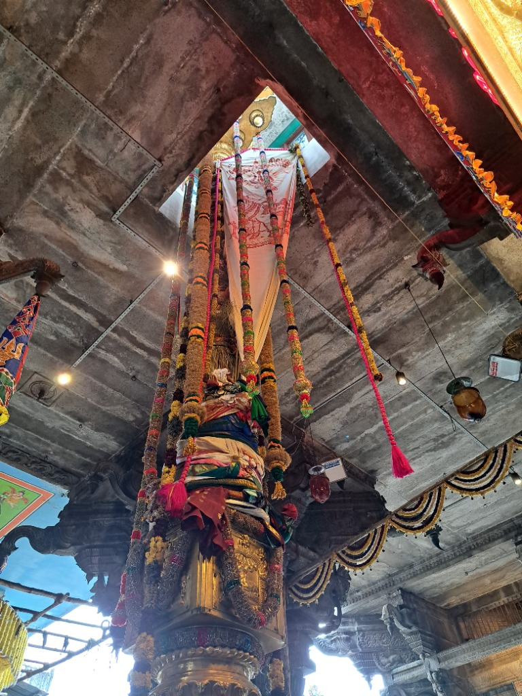

SRI KRISHNA YAJUR VEDA PARAYANA TRUST
ஸ்ரீ கிருஷ்ண யஜுர் வேத பாராயண டிரஸ்ட் - சிதம்பரம்
Thillai Nataraja Kshetram, Chidambaram
॥ दिव्य दर्शनम् ॥
Sacred Visual Gallery
Immerse yourself in the divine grace of Lord Nataraja, the golden Kanaka Sabha roof, ancient Chola stone towers, and daily Vedic chanting sessions.
 Sanctum Sanctorum
Sanctum Sanctorum
The golden icon of Lord Nataraja performing the eternal cosmic dance within the halo of cosmic fire (Prabha Mandala), adorned with divine garlands and lamps.
 Architecture
Architecture
The magnificent 9 sacred golden spires (Kalashas) atop the world-famous Kanaka Sabha golden roof (Porkoorai) representing the nine cosmic energies.
 புனித தீர்த்தம் / Sacred Tank
புனித தீர்த்தம் / Sacred Tank
The holy Sivaganga Theertham (சிவகங்கை குளம்) is the ancient sacred water tank situated within the temple complex. Enclosed by stone-pillared cloisters and stepped ghats, its tranquil waters capture the divine reflection of the towering Raja Gopuram. Taking a holy dip here before entering Kanaka Sabha is considered spiritually purifying.
 ராஜ சபை / Raja Sabha
ராஜ சபை / Raja Sabha
The majestic Raja Sabha (ஆயிரம் கால் மண்டபம்) is an architectural masterpiece of Chola artistry, designed as a celestial stone chariot drawn by caparisoned horses and elephants. Built on 1,000 intricately sculpted granite pillars, it serves as the sacred throne where Lord Nataraja and Goddess Sivakami Ambal are seated for the magnificent public Mahabhishekam during the annual Arudhra Darisanam and Aani Thirumanjanam festivals.
 கோபுர தரிசனம் / Gopuram Darshan
கோபுர தரிசனம் / Gopuram Darshan
The magnificent Raja Gopuram of Thillai Nataraja Temple bathed in sacred night illumination. Soaring into the starry night sky with nine grand sculpted tiers, its colossal granite base features exquisite stone carvings of all 108 sacred Natya Karanas (classical dance postures described in Bharata Muni's Natya Shastra). As the sacred Tamil saying goes, 'கோபுர தரிசனம் கோடி புண்ணியம்' (Darshan of the temple Gopuram bestows the virtue of ten million good deeds), guiding pilgrims through the ancient stone threshold into the divine presence of Lord Nataraja.
 சிதம்பர ரகசியம்
சிதம்பர ரகசியம்
The boundless secret of Chidambaram: the sacred void representing Akasa (formless Ether), adorned with holy garlands of golden Vilva leaves (Swarna Vilva Mala), revealed during Deeparadhana when the veil of Maya is ceremoniously drawn aside.
 வைதீக வேள்வி / Vedic Yajna
வைதீக வேள்வி / Vedic Yajna
A traditional Hindu Vedic Homa / Havan (sacred fire ritual) performed by venerable Podu Dikshitar Sri K. Sivasubramanya Deekshidhar. Seated in the consecrated Yagashala, offering sacred oblations (Ajya Ahuti) and samithu into the burning Agni Kundam accompanied by powerful Krishna Yajur Veda chantings for universal well-being, spiritual upliftment, and divine grace.

பொன்னம்பலம் / Sanctum DarshanThe supreme sanctum sanctorum of Lord Thillai Nataraja and Sri Sivakami Sundari with the divine Chidambara Rahasyam, golden vilva garland, and eternal sanctum deepams.
 பொற்கூரை / Golden Roof Mandapam
பொற்கூரை / Golden Roof Mandapam
Devotees and pilgrims standing in reverence within the inner temple prakara facing the world-renowned Kanaka Sabha roof adorned with 21,600 pure golden tiles.
 Trust Activities
Trust Activities
Venerable Vedic pundits seated in the stone mandapam reciting ancient Taittiriya Samhita hymns before Lord Nataraja.
Sacred gold crest depicting Lord Nataraja, the Holy Om, Vedic scriptures, and the Sanskrit motto 'Vedo Akhilo Dharmamoolam'.

சொர்ண அலங்காரம் / Divine AlankaramThe awe-inspiring Swarna Kavacha Alankaram of Lord Thillai Nataraja, radiantly adorned in gold attire, Navaratna-studded necklaces, sacred flower garlands, and surrounded by illuminating traditional brass oil lamps during the sacred Maha Deeparadhana.

பொற்கூரை / Golden SanctumBreathtaking perspective of the Kanaka Sabha's legendary Golden Roof (பொற்கூரை) glistening beneath the skies, viewed from the ancient granite courtyard where thousands of devotees gather daily for the holy darshan of Lord Nataraja.

கோபுர கலசங்கள் / Golden KalashasClose-up view of the 9 sacred solid-gold Kalashas crowning the crest of the Kanaka Sabha against the dramatic horizon. In Saiva Agamic tradition, these 9 kalashas symbolize the 9 divine aspects of Shakti sustaining the cosmic universe.

வைதீக யாகம் / Sacred YajnaSacred Vedic Yajna and Homa performed with profound devotion by venerable Dikshitars. Pure ghee and medicinal samithu herbs are offered into the blazing consecrated Agni Kundam accompanied by powerful chanting of Taittiriya Samhita hymns for universal peace and prosperity.

கொடிமரம் / DwajasthambamThe grand golden Dwajasthambam (கொடிமரம் - sacred flagpole) soaring upward into the temple hall skylight, exquisitely decorated with sacred silks, vibrant festive garlands, and the holy temple flag bearing the sacred emblem of Lord Shiva.